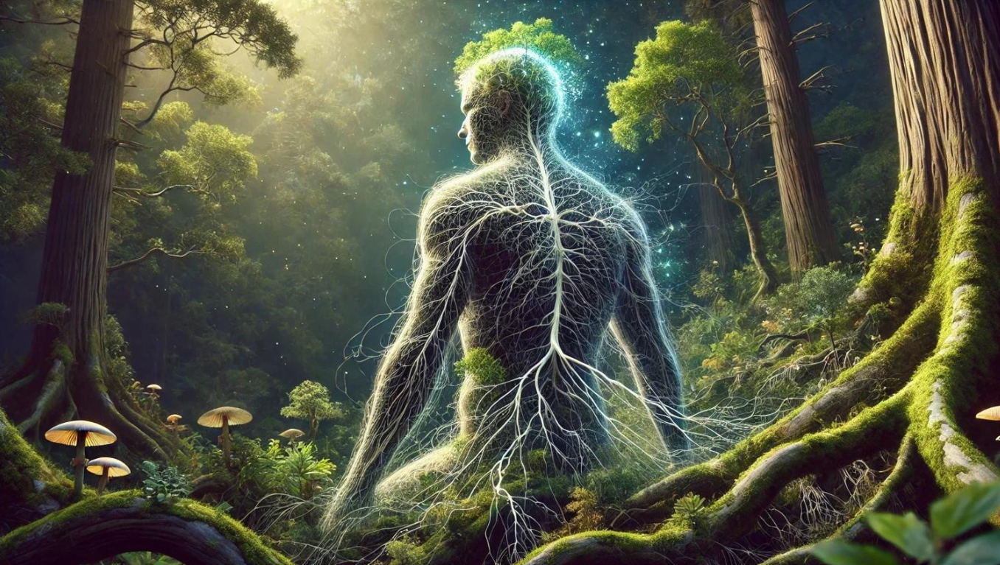

1. Detetive de pistas
Você vai explorar a floresta. Em qual elemento observaria primeiro para planejar o caminho?
Observe uma pista e explique o que ela permite concluir.

2. Oficina de estratégias
Reorganize as etapas usando as setas. Qual ordem ajuda a aprender uma tarefa nova?
Tente organizar as ações.

3. Radar da certeza
Você leu uma notícia surpreendente sobre árvores. Como saber se a afirmação é confiável?
Observe sua confiança antes de pesquisar.

4. Troque a lente
Uma pessoa não respondeu à sua mensagem. Escolha duas explicações possíveis, sem presumir a intenção dela.
Encontre interpretações alternativas.
O que você descobriu sobre seu pensamento?
Reparou quando precisava de mais informação? Mudou de estratégia? Essas observações são parte da metacognição.
Voltar ao módulo da natureza